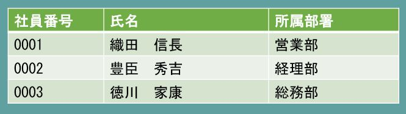

SQLにはDDL（Data Definition Language）とDML（Data Manipulation Language）があります。DDLはテーブルを作成したり削除したりテーブル定義を変更したりする場合に用いられるSQLです。知っておいても損はありませんが、実際のシステム開発プロジェクトにおいて個別の担当者がDDLを使わなければならないケースはほぼないでしょう。これに対してDMLはデータの登録、読み取り、更新、削除を行うためのSQLです。通常はSQLといえばDMLのことを指します。
データベースと連携するシステムを開発するエンジニアは（データベースと連携しないシステムを開発することはまず考えられませんが）DMLの知識が必ず要求されます。このような背景から本稿ではDDLの説明は割愛し、DMLに絞って解説をしていくこととします。
DMLにはデータの登録（Create）、読み取り（Read）、更新（Update）、削除（Delete）という四つの主要な操作があります。これらの操作を総称して、それぞれの頭文字をとったCRUD（クラッド）という呼び方があります。本教育プログラムではCRUDすべてについて基本的な文法を学びますが、実際のシステム開発プロジェクトで記述するSQLの大半はデータの読み取り（Read）です。この為、本教育プログラムではデータの読み取りを行うためのSQLについて重点的に解説していきます。
データの登録を行うにはINSERT文を使います。INSERT文の基本的な構文は以下の通りです。
INSERT INTO {テーブル名}
(項目名1,項目名2,項目名3)
VALUES
(値1,値2,値3)
上記の例では項目名1に値1を、項目名2に値2を、そして項目名3に値3をセットしてレコードを新たに作成します。INSERT文自体は特に難しいこともなく比較的簡単に理解できますが、レコードを新たに作成するということは既にあるレコードと主キーが重複する可能性をもつということです（一意制約）。このため、一般的にはINSERT文を実行する前にこれから作成しようとしているレコードの主キーが既に存在していないかチェックする処理が行われます。
実際の開発ではこれから作成しようとしているレコードの主キーが既に存在している場合は更新、存在していなければ登録という処理がよく行われます。このような処理をUPSERT（UPDATEとINSERTをくっつけた造語）といいます。UPSERTを行うための構文としてMERGE（マージ）文がありますが、MERGE文は少々難解ですので本項の説明範囲からは除外しています。
データの読み取りを行うためにはSELECT文を使います。一口にSELECT文といっても様々なパターンがあり、その全てを一度に理解するのはとても難しいことです。しかし、「SELECT文を制する者はSQLを制する」と言われるほどSELECT文はSQLの中では重要な位置を占めています。SELECT文の詳細については後の章で解説するとして、ここではSELECT文がどのような構造で成り立っているか？ということを中心に解説していきます。SELECT文の基本的な構文は以下の通りです。
SELECT 項目名1,項目名2,項目名3,項目名4
FROM {テーブル名}
WHERE 項目名 = 値
SELECT文は大きく分けてテーブルから取得する項目を選択するSELECT句、参照したいテーブルを指定するFROM句、検索条件を指定するWHERE句の三つのパートからなります。この中で最も重要なのはWHERE句です。つまりSELECT文を理解するためにはWHERE句を理解することが最も重要であるということです。
この図は前章で出てきた従業員テーブルです。この従業員テーブルから経理部に所属する従業員の氏名を検索したい場合は以下のようなSQLになります。
SELECT 氏名 FROM 従業員 WHERE 所属部署 = '経理部'
これはあくまでも極めてシンプルなテーブルを使った極めて単純な例ですが、複雑なテーブルであっても基本的なルールは同じです。また、WHERE句を駆使することによって相当に複雑な検索処理を実現することもできます。
データの更新はUPDATE文を使います。まずはUPDATE文の構文を見てみましょう。
UPDATE {テーブル名}
SET 項目名 = 値
WHERE 項目名 = 値
このUPDATE文にもWHERE句が登場しました。これは更新すべきレコードをWHERE句によって絞り込んだ後にSET句で指定した更新を行っているためです。つまりUPDATE文も内部的には検索処理が実行されているということになります。SELECT文が最も重要であるという理由はここにあります。UPDATE文であっても、この後解説するDELETE文であっても内部的に一度検索処理が実行されるのです。従って検索処理を司るSELECT文を理解してしまえばUPDATE文やDELETE文も自ずと理解できてしまうのです。
それでは先ほどの従業員テーブルを使ってUPDATE文を練習してみましょう。
UPDATE 従業員 SET 所属部署 = '人事部' WHERE 社員番号 = '0001'
上記のSQLでは社員番号が0001のレコードの所属部署を人事部に更新しています。これは内部的に社員番号が0001のレコードを検索し、検索にヒットしたレコードの所属部署を人事部に更新しているという処理を実行しています。この例では従業員テーブルの主キーである社員番号を検索条件としているため、更新されるレコードは必ず1レコードとなりますが、下記のようなSQLに修正すると複数レコードをまとめて更新することもできます。
UPDATE 従業員 SET 所属部署 = '人事部' WHERE 所属部署 = '営業部'
この例では所属部署が営業部のレコードを全て人事部所属に更新しています。結局のところ、UPDATE文においてもWHERE句によって更新対象をどのように絞り込むかということがポイントになると理解できたと思います。
データの削除にはDELETE文を用います。厳密にはDELETE文はデータの削除というよりはレコードの削除を行うための構文と言った方が正確です。早速構文を確認してみましょう。
DELETE FROM {テーブル名} WHERE 項目名 = 値
やはりここでもWHERE句が出てきました。これはUPDATE文と同様の理由で、内部的には削除すべきレコードを検索して特定してから削除を実行しているからです。つまりDELETE文においても内部的に検索処理が実行されていることになります。それではまた従業員テーブルに登場してもらいましょう。
この中から社員番号が0003のレコードを削除したい場合、SQLは以下のようになります。
DELETE FROM 従業員 WHERE 社員番号 = '0003'
以上がDMLの基本的な書き方です。どのような複雑なSQLでも構造をしっかりとらえれば必ず理解できるようになります。そのためには基本的な文法の知識を身に付けておくことが大事です。この章の内容はきちんと理解しておきましょう。